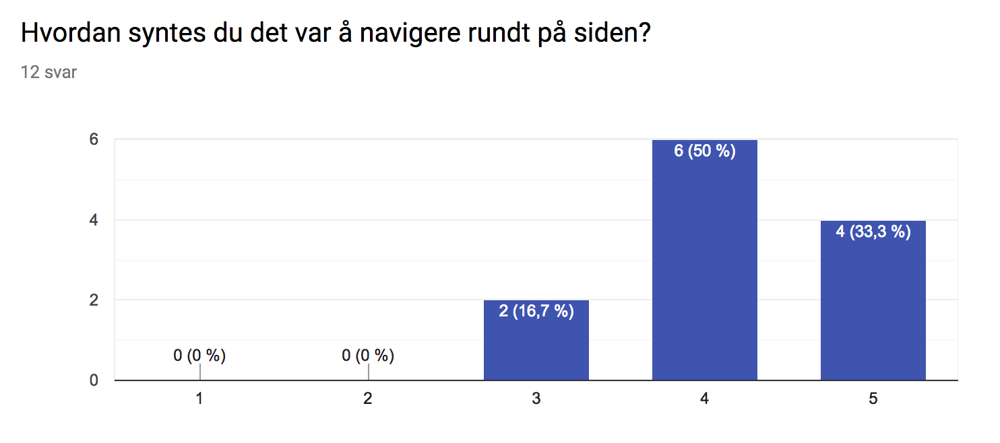
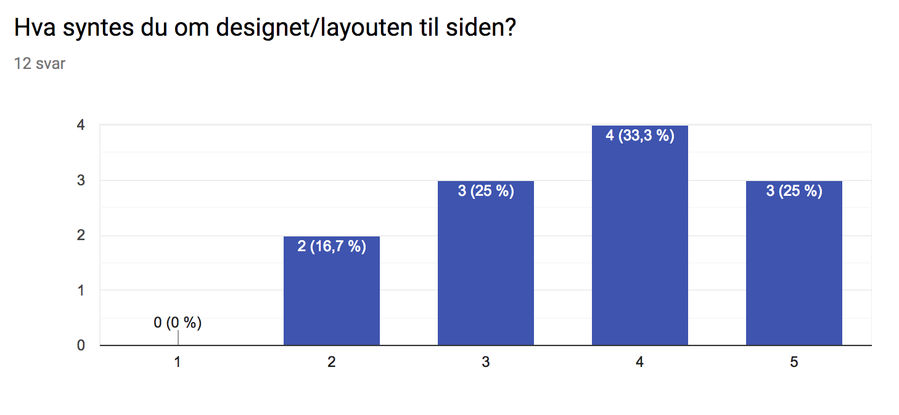
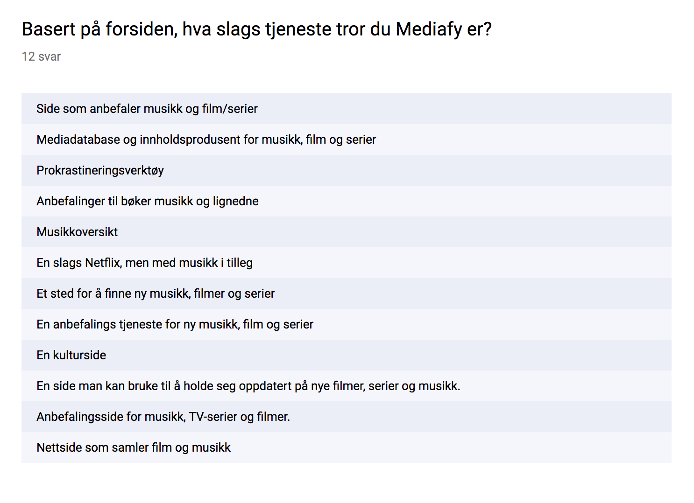
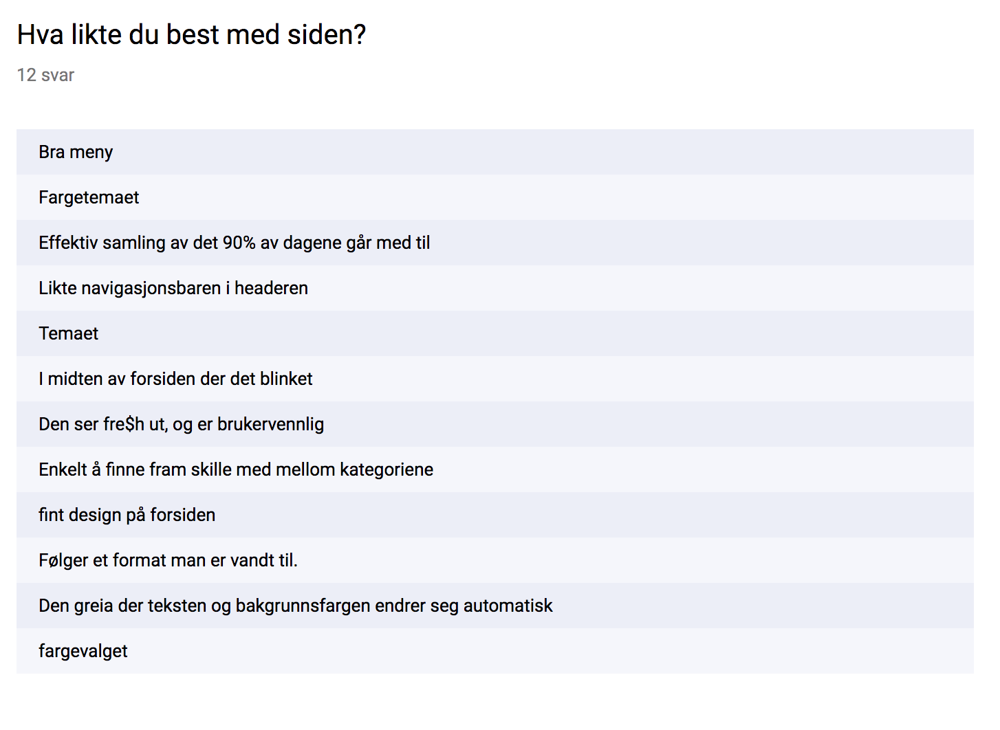

Administrative Details
Name of client: Mediafy - The Latest In Music, Movies And Series
Contact Person from client: William Østensen and Victor Jørgensen(Founders)
Link to webpage: http://folk.ntnu.no/victojo/Documents/mediafy/index.html
Testing Document
Link to the form used: FORM
Here's a list of the questions that were used to test the site:
- Basert på forsiden, hva slags tjeneste tror du Mediafy er?
- Hvordan syntes du det var å navigere rundt på siden?(1-5)
- Hva syntes du om designet/layouten til siden?(1-5)
- Hvor lett syntes du det var å lese innholdet på siden?(1-5)
- Ser du noen feil med siden, eller ting som mangler?
- Hva likte du best med siden?
- Hva likte du dårligst med siden?
- Klikket du deg inn på noen av artiklene på siden?
- Hvilken enhet bruker du?
Questions for users using phones or tablets:
- Ser du noe som er plassert feil på siden, eller elementer som overlapper?
- Var det lett å lese innhold og se bildene på siden?(1-5)
- Hadde du noen problemer med å klikke deg rundt på siden? Hvis ja, hvilke problemer?
Tester Audience
When collecting our tester audience we sent out the form to co-students and different people between the age of 20-25 years old which is the intended age group we were trying to reach out to.
We only felt the need to test the site on our target audience such that we could find out if we the page really reached out to the people it was intended for.
Feedback Summary
Navigation
Hadde du noen problemer med å klikke deg rundt på siden? Hvis ja, hvilke problemer?

Design
Hva syntes du om designet/layouten til siden?

Ser du noen feil med siden, eller ting som mangler?
Criticism/Suggestions:
- Dimensjonene på en del av bildene er strukket
- ikke funksjonelle feil, men en del å ta av designet
- Den baren med "GO TO FILM GO TO MUSIC GO TO SERIES" kan droppes. Man kan allerede enkelt navigere seg dit via toppbaren. Er bare forvirrende med flere veier til samme plass. Jo enklere jo bedre.
Ser du noe som er plassert feil på siden, eller elementer som overlapper?(For Mobil)
Answers:
- Bruk gjerne bredden av skjermen
Content
Basert på forsiden, hva slags tjeneste tror du Mediafy er?

Hva likte du best med siden?

Hva likte du dårligst med siden?
- Den discover/explore/osv-boksen på startsiden
- Tidvis vanskelig å lese
- Litt "flashy" muligens
- All animasjonen på forsiden er forvirrende og gir ingenting. Bildene dere bruker er alt for store og bruker lang til på å laste inn. En del accesebility issues, med f.eks. hvit skrift på lys bakgrund
- Litt uestetisk farger. Prøv å sjekk ut fargekombinasjoner som anbefales på nett.
- Brunfargen
- Den blå teksten på startsiden der teksten endrer seg. Den skiller seg veldig ut fra resten av siden, og ser "billig"ut imotsetning til resten av nettsiden
- Lite anbefalt, trenger mer lit
- ikke så fine fonter
- Der hvor tekst og bakgrunnsfarge endrer seg konstant er bare forstyrrende. Kul feature, men må gjøres mer subtilt, ellers blir det bare bråkete.
- at bildene i rundingene ble "misformet"
- At artist, bilde eller series of the week ligger på toppen av et annet bilde, blir rotete
Useability
Response
Self-Reflection